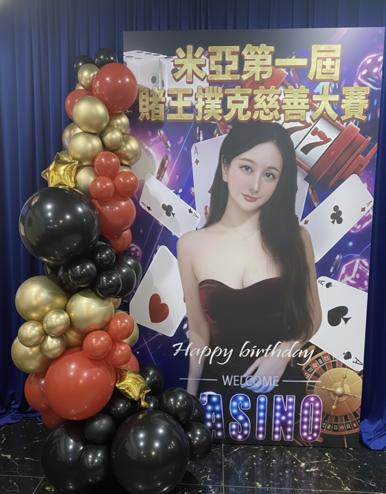

🎰 客製化賭場風活動佈置｜米亞第一屆賭王撲克慈善大賽視覺設計紀錄
在活動現場，視覺就是第一個說服力。打造專屬賭場風格的拍照殿堂！
📍 地點：板橋 SAMURAI 桌遊侍
大家好，我是氣球大叔 Sony！這次來到板橋的 SAMURAI 桌遊侍，挑戰了一個極具張力的主題——「米亞第一屆賭王撲克慈善大賽」。這場活動不僅僅是一場競賽，更是一次結合娛樂與公益的盛會。

🎯 活動佈置核心：撲克牌 × 賭場風 × 黑金紅質感
主視覺背板融合了撲克牌花色、骰子、輪盤等元素，並特別進行了人像主視覺合成，讓主辦方的形象與主題完美契合。我在背板左側設計了「不規則氣球鍊」，選用了金屬金、啞光黑與亮紅色的異材質組合，創造出不對稱的美感。
💡 為什麼你需要客製化活動視覺？
不管是企業年會、品牌發表或私人生日派對，一塊「好的背板」能讓活動檔次瞬間提升。當照片在社群媒體擴散時，專業的視覺設計就是最好的廣告。本案服務項目包含：客製化活動背板設計、賭場風主題佈置、不規則氣球鍊、企業活動拍照牆、慈善晚會視覺整合。
"Sony 老師這次的佈置真的讓我們很驚艷！背板設計完全符合我們想要的賭場高級感，氣球的質感也非常棒，所有賓客一進來就在這裡拍個不停，真的幫我們的活動加了很多分！"
💡 關於板橋活動佈置的常見問題
- Q: 在板橋地區預約客製化背板與氣球佈置，需要提前多久規劃？
- A: 為了確保背板輸出的品質與設計細節，我們建議至少提前 2 至 3 週與我們聯絡。板橋地區的活動場地多元，氣球大叔 Sony 會根據您的主題（如賭場風、工業風等）進行專屬校稿。提早預約不僅能預留熱門檔期，也能讓我們有更充裕的時間進行異材質氣球的備料，確保當日呈現最完美的拍照效果。
- Q: 什麼是『不規則氣球鍊』？它與傳統氣球拱門有什麼差別？
- A: 不規則氣球鍊佈置是目前最流行的高質感設計。不同於傳統等大規律的氣球堆疊，不規則使用多種尺寸、異材質（如金屬、亮面、啞光）的氣球自然交織，形成如同藝術品般流暢的線條。在本次板橋米亞撲克大賽中，我們運用黑金紅配色展現賭場的氣派感，視覺層次更豐富，是提升企業活動質感的關鍵首選。
- Q: 如果場地空間有限（如桌遊店或小型包廂），可以做大型背板佈置嗎？
- A: 沒問題！氣球大叔 Sony 擅長根據場地動線調整佈置比例。以板橋桌遊侍的案例來說，我們精準測量牆面空間，設計出既具備震撼力又不阻礙動線的客製化拍照區。我們會利用空間深度與燈光搭配，讓背板成為賓客入場的第一印象，即便是小型場地也能營造出國際級賽事的專業氛圍，歡迎提供尺寸讓我們為您量身規劃。
🎈 正在尋找板橋活動佈置嗎？
如果您也希望為您的活動創造像現場一樣爆棚的人氣與驚喜，氣球大叔 Sony 是您的首選！我們專注於提供高品質的互動演出與情境佈置：
- 百貨商場活動：中庭舞台秀、假日聚客、週年慶造勢。
- 品牌行銷推廣：新品發表會、門市開幕、VIP 客戶派對。
- 親子家庭日：企業家庭日、社區晚會、私人慶生派對。
📅 本文整理於 2026-01-25，完整紀錄真實活動現場氛圍。